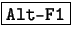
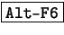

Next: La base de datos
Up: Entrar en el sistema
Previous: Introducción
Índice General
Existen diferentes métodos para poder conectar los terminales al
sistema:
- En primer lugar podemos conectarnos a un GNU/Linux a través de
el puerto serie (RS232), con una terminal no inteligente o
bien con otro equipo y un emulador de terminales. En ambos casos
existe un programa que atiende las solicitudes de conexión a través
del puerto serie. Cuando hay una solicitud de conexión, este
programa la atiende solicitando al usuario que se identifique ante
el sistema. Cuando termina la conexión, este programa se reactiva
para seguir atendiendo nuevas solicitudes.
- Mediante tarjeta de red. En este caso, tenemos un
programa que escucha las solicitudes de conexión a través de la
tarjeta de red. Cuando llega una solicitud este programa se desdobla
de forma que una parte atiende la conexión y otra continúa
atendiendo nuevas conexiones. Así podemos tener más de una conexión
a través de la tarjeta de red. Algunos servicios que proveen esta
funcionalidad son el telnet (sin encriptación de datos) y
el ssh (Secure Shell, con encriptación de datos). Esto se
verá mas adelante.
- La consola. Evidentemente, en un sistema GNU/Linux
también podemos trabajar desde el teclado y monitor que están
conectados directamente al sistema. Normalmente en la mayoría de las
distribuciones, en la consola hay hasta 6 terminales virtuales,
accediendo a cada una de ellas con  a .
Una vez que se ha conseguido conectar a un sistema GNU/Linux tenemos
que iniciar una sesión de trabajo. GNU/Linux es un sistema
multiusuario, y esto exige que el usuario se presente al sistema y que
este lo acepte como usuario reconocido. Así cada vez que iniciamos
una sesión GNU/Linux nos responde con
Login:
a lo que se debe responder con el nombre de usuario. Acto seguido,
GNU/Linux solicita una clave para poder comprobar que el usuario es
quien dice ser:
Password:
En este caso se teclea la clave de acceso. Por motivos de seguridad
esta clave no aparecerá en la pantalla. Si la pareja nombre de
usuario/clave es correcta el sistema inicia un intérprete de comandos
con el que se puede trabajar.
Habitualmente será el símbolo $, aunque puede ser también
el símbolo % (si usamos un shell C). Cuando es el
administrador (root) quien está trabajando en el sistema, el indicador
que aparece es #.
Next: La base de datos
Up: Entrar en el sistema
Previous: Introducción
Índice General
Proyecto Cursos - LuCAS - http://lucas.hispalinux.es/htmls/cursos.html